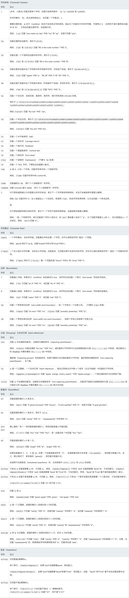

中高级前端大厂面试秘籍，为你保驾护航金三银四，直通大厂(上)
JavaScript
var, let 区别
-
顶级作用域 var 声明变量是 window 的属性，let\const 声明变量不是 window 的属性，变量都可以在控制台访问。
-
let声明的变量拥有块级作用域，不存在变量提升
-
暂时性死区
只要块级作用域内存在let命令，它所声明的变量就“绑定”（binding）这个区域，不再受外部的影响。
var tmp = 123;
if (true) {
tmp = 'abc'; // ReferenceError
let tmp;
}
-
不允许重复声明
箭头函数
没有自己的 this，arguments，super 或 new.target。不能用作构造函数。
-
箭头函数不会创建自己的 this，它只会从自己的作用域链的上一层继承 this
在箭头函数出现之前，每个新定义的函数都有它自己的 this 值（在构造函数的情况下是一个新对象，在严格模式的函数调用中为 undefined，如果该函数被作为“对象方法”调用则为基础对象等）
由于 箭头函数没有自己的 this 指针，通过 call() 或 apply() 方法调用一个函数时，只能传递参数（不能绑定 this---译者注），他们的第一个参数会被忽略。
-
箭头函数不绑定 Arguments 对象。
-
箭头函数不能用作构造器，和 new 一起用会抛出错误。
-
箭头函数没有 prototype 属性。
fetch 取消
symbol
-
Symbol()
Symbol函数可以接受一个字符串作为参数，表示对 Symbol 实例的描述，主要是为了在控制台显示，或者转为字符串时，比较容易区分。
-
Symbol.for()
接受一个字符串作为参数，然后搜索有没有以该参数作为名称的 Symbol 值。如果有，就返回这个 Symbol 值，否则就新建并返回一个以该字符串为名称的 Symbol 值。
Symbol.for()与Symbol()这两种写法，都会生成新的 Symbol。它们的区别是，前者会被登记在全局环境中供搜索，后者不会。
-
Symbol.keyFor()
Symbol.keyFor方法返回一个已登记的 Symbol 类型值的key。
JS 继承
-
原型链：本质是重写原型对象
-
借用构造函数
解决了原型中包含引用类型值所带来的问题
子类构造函数中向超类构造函数传递参数
-
实现
function SuperType(name) {
this.name = name
this.colors = ['red', 'blue', 'green']
}
function SubType(name, age) {
SuperType.call(this, name)
this.age = age
}
var inst1 = new SubType('Nicholas', 29)
inst1.colors.push('black')
console.log(inst1.colors)
var inst2 = new SubType('Jerry', 27)
console.log(inst2.colors)
-
问题
- 方法都在构造函数中定义，函数复用无从谈起。
- 超类原型中定义的方法，子类不可见。
-
组合继承
将原型链 和 借用构造函数 结合到一起
-
实现
function SuperType(name) {
this.name = name
this.colors = ['red', 'blue', 'green']
}
SuperType.prototype.sayName = function() {
console.log(this.name)
}
function SubType(name, age) {
SuperType.call(this, name)
this.age = age
}
SubType.prototype = new SuperType()
SubType.prototype.constructor = SubType
SubType.prototype.sayAge = function() {
console.log(this.age)
}
var inst1 = new SubType('Nicholas', 29)
inst1.colors.push('black')
console.log(inst1.colors)
inst1.sayName()
inst1.sayAge()
var inst2 = new SubType('Jerry', 27)
console.log(inst2.colors)
inst2.sayName()
inst2.sayAge()
-
问题
-
组合继承无论什么情况下，都会调用两次超类构造函数：
一次是在创建�子类原型的时候- �
另一次是在子类构造函数内部调用超类构造函数。
-
原型式继承
Object.create()规范化了原型式继承
-
Object.create(proto, [propertiesObject])
Object.create() 方法创建一个新对象，使用现有的对象来提供新创建的对象的__proto__。
-
proto
新创建对象的原型对象。
-
propertiesObject
可选。如果没有指定为 undefined，则是要添加到新创建对象的可枚举属性（即其自身定义的属性，而不是其原型链上的枚举属性）对象的属性描述符以及相应的属性名称。这些属性对应 Object.defineProperties() 的第二个参数。
-
实现
if (typeof Object.create !== 'function') {
Object.create = function(proto, propertiesObject) {
if (typeof proto !== 'object' && typeof proto !== 'function') {
throw new TypeError('Object prototype may only be an Object: ' + proto)
} else if (proto === null) {
throw new Error(
"This browser's implementation of Object.create is a shim and doesn't support 'null' as the first argument."
)
}
if (typeof propertiesObject != 'undefined')
throw new Error(
"This browser's implementation of Object.create is a shim and doesn't support a second argument."
)
function F() {}
F.prototype = proto
return new F()
}
}
-
问题
在没有必要兴师动众的创建构造函数，而只是想让一个对象与另一个对象保持类似的情况下，原型式继承是完全可以胜任的。但是，包含引用类型值的属性始终都会共享相应的值。
-
寄生式继承
创建一个仅用于封装继承过程的函数，该函数在内部以某种方式来增强对象。
-
实现
function createAnother(original) {
var clone = Object.create(original)
clone.sayHi = function() {
console.log('Hi')
}
return clone
}
var person = {
name: 'Nicholas',
friends: ['red', 'blue', 'green']
}
var anotherPerson = createAnother(person)
anotherPerson.sayHi()
-
问题
- 不能做到函数复用而降低效率
-
寄生组合式继承
组合继承无论什么情况下，都会调用两次超类构造函数：
一次是在创建�子类原型的时候
�另一次是在子类构造函数内部调用超类构造函数。
function SuperType(name) {
this.name = name
this.colors = ['red', 'blue', 'green']
}
SuperType.prototype.sayName = function() {
console.log(this.name)
}
function SubType(name, age) {
SuperType.call(this, name)
this.age = age
}
SubType.prototype = new SuperType()
SubType.prototype.constructor = SubType
SubType.prototype.sayAge = funciton() {
console.log(this.age)
}
第一次调用在原型上有两个属性 �name 和 colors
调用子类构造函数的时候，又会调用 � 超类构造函数，� 又会在新对象上创建实例属性 �name 和 colors，于是原型链上的两个同名属性就被屏蔽了
-
实现
function inheritPrototype(subType, superType) {
var prototype = Object.create(superType.prototype)
prototype.constructor = subType
subType.protototype = prototype
}
function SuperType(name) {
this.name = name
this.colors = ['red', 'blue', 'green']
}
SuperType.prototype.sayName = function() {
console.log(this.name)
}
function SubType(name, age) {
SuperType.call(this, name)
this.age = age
}
inheritPrototype(SubType, SuperType)
SubType.prototype.sayAge = function() {
console.log(this.age)
}
-
引用类型最理想的继承范式
Class 的继承
instanceof
instanceof 运算符用于测试构造函数的 prototype 属性是否出现在对象的原型链中的任何位置.
如果左操作数不是对象，则返回 false,如果右操作数不是函数，则抛出 typeError.
-
实现原理
instanceof 主要的实现原理就是只要右边变量的 prototype 在左边变量的原型链上即可
function new_instance_of(leftVaule, rightVaule) {
let rightProto = rightVaule.prototype
leftVaule = leftVaule.__proto__
while (true) {
if (leftVaule === null) {
return false
}
if (leftVaule === rightProto) {
return true
}
leftVaule = leftVaule.__proto__
}
}
-
几个有趣的例子
Function instanceof Function
Object instanceof Function
Object instanceof Object
Function instanceof Object

typeof
typeof 在判断一个 object 的数据的时候只能告诉我们这个数据是 object, 而不能细致的具体到是哪一种 object
最好是用 typeof 来判断基本数据类型（包括 symbol）和 function，避免对 null 的判断。
typeof undefined
typeof true
typeof function() {}
typeof {}
typeof []
typeof null
typeof new String('abc')
typeof new Date()
还有一个不错的判断类型的方法，就是 Object.prototype.toString
Object.prototype.toString.call(1)
Object.prototype.toString.call('hi')
Object.prototype.toString.call({ a: 'hi' })
Object.prototype.toString.call([1, 'a'])
Object.prototype.toString.call(true)
Object.prototype.toString.call(() => {})
Object.prototype.toString.call(null)
Object.prototype.toString.call(undefined)
Object.prototype.toString.call(Symbol(1))
let class2Type = {}
['Array', 'Date','RegExp', 'Error', 'Object'].forEach(type => class2Type[`[object ${type}]`] = type.toLowerCase())
function type(obj) {
if(obj === null) return String(null)
return typeof obj === 'object' ? class2Type[Object.prototype.toString.call(obj)] || 'object' : typeof obj
}
只有字面量形式的 string、 number、 boolean、 undefined、function 才能分辨出来，其他都为 object
| Value |
Class |
Type |
| "foo" |
String |
string |
| new String("foo") |
String |
object |
| 1.2 |
Number |
number |
| new Number(1.2) |
Number |
object |
| true |
Boolean |
boolean |
| new Boolean(true) |
Boolean |
object |
| new Date() |
Date |
object |
| new Error() |
Error |
object |
| [1,2,3] |
Array |
object |
| new Array(1, 2, 3) |
Array |
object |
| new Function("") |
Function |
function |
| /abc/g |
RegExp |
object (function in Nitro/V8) |
| new RegExp("meow") |
RegExp |
object (function in Nitro/V8) |
| {} |
Object |
object |
| new Object() |
Object |
object |
| null |
Null |
object |
| undefined |
Undefined |
undefined |
Class 一列表示对象的内部属性 [[Class]] 的值。
为了获取对象的 [[Class]]，我们需要使用定义在 Object.prototype 上的方法 toString。
数字千分位处理，正则和非正则都要实现(千位加逗号)
-
numObj.toLocaleString([locales [, options]])
var num = 234982347.73
console.log(num.toLocaleString())
var num = 234982347.73
num.toString().replace(/^\d+/g, m => m.replace(/(\d{1,3})(?=(?:\d{3})+$)/g, '$1,'))

实现一个 bind 函数 *
bind()方法创建一个新的函数，在调用时设置 this 关键字为提供的值。并在调用新函数时，将给定参数列表作为原函数的参数序列的前若干项。
function.bind(thisArg[, arg1[, arg2[, ...]]])
-
thisArg
调用绑定函数时作为 this 参数传递给目标函数的值。 如果使用 new 运算符构造绑定函数，则忽略该值。当使用 bind 在 setTimeout 中创建一个函数（作为回调提供）时，作为 thisArg 传递的任何原始值都将转换为 object。如果 bind 函数的参数列表为空，执行作用域的 this 将被视为新函数的 thisArg。
-
arg1, arg2, ...
当目标函数被调用时，预先添加到绑定函数的参数列表中的参数。
if (!Function.prototype.bind) {
Function.prototype.bind = function(oThis) {
if (typeof this !== 'function') {
throw new TypeError('Function.prototype.bind - what is trying to be bound is not callable')
}
var args = Array.prototype.slice.call(arguments, 1),
functionToBind = this,
functionBound = function() {
var bindArgs = Array.prototype.slice.call(arguments)
return functionToBind.apply(
this instanceof functionBound ? this : oThis,
args.concat(bindArgs)
)
}
var fNOP = function() {}
if (this.prototype) {
fNOP.prototype = this.prototype
}
functionBound.prototype = new fNOP()
return functionBound
}
}
编程
function flatten(input) {
if (Array.isArray(input)){
var output = []
function _flatten (input) {
for(var i = 0; i < input.length; i++){
var value = input[i]
if(Array.isArray(value)) {
_flatten(value)
}
else{
output.push(value)
}
}
}
_flatten(input)
return output
}else {
return input;
}
}
function flatten(input) {
return Array.isArray(input) ? input.toString().split(',') : input
}
const testData = {
a_bbb: 123,
a_g: [1, 2, 3, 4],
a_d: {
s: 2,
s_d: 3
},
a_f: [1, 2, 3, {
a_g: 5
}],
a_d_s: 1
}
function mapKeysToCamelCase(data) {
if(isBaseType(data)) {
return data
}
if(Array.isArray(data)) {
return data.map(key => {
return isBaseType(key)? key: mapKeysToCamelCase(key)
})
}
let obj={};
Object.keys(data).forEach(key => {
const _key = strToCamelCase(key);
obj[_key] = mapKeysToCamelCase(data[key])
})
return obj;
}
const isBaseType= (function() {
const baseTypes = ["Number", "String","Boolean","Null","Undefined"].map(item => `[object ${item}]`);
return (val) => {
const tp = Object.prototype.toString.call(val)
return baseTypes.includes(tp);
}
})()
function strToCamelCase(key) {
return (''+key).replace(/(_.{1})/g, (val) => val.slice(1).toUpperCase());
}
console.log(mapKeysToCamelCase(testData))
function maxN(str) {
let obj = {};
(''+str).replace(/(\w{1})/g, letter => {
obj[letter]?obj[letter] += 1: obj[letter] = 1;
return letter;
})
let letter = '',
max = 0;
for(let _letter in obj) {
if(obj[_letter] > max) {
max = obj[_letter];
letter = _letter
}
}
return {letter, max}
}
const str = 'qweqrtyuiqqqwrtyudfgerqtywer';
console.log(maxN(str))
- 请编写一个 JavaScript 函数 parseQueryString ，他的用途是把URL参数解析为一个对象
function parseQueryString(url) {
let result = {};
let arr = url.split('?');
if(arr.length <= 1) {
return result;
} else {
arr = arr[1].split('#');
arr = arr[0].split('&');
arr.forEach(item => {
const [key, value] = item.split('=');
result[key] = value;
})
}
return result;
}
var url = "http://witmax.cn/index.php?key0=0&key1=1&key2=2#location";
console.log(parseQueryString(url))
- 在IE6.0下面是不支持
position：fixed 的，请写一个JS使用固定在页面的右下角。
<html lang="en">
<head>
<meta charset="UTF-8" />
<meta name="viewport" content="width=device-width, initial-scale=1.0" />
<meta http-equiv="X-UA-Compatible" content="ie=edge" />
<title>Document</title>
<style>
.tit {
position: absolute;
width: 100px;
height: 100px;
background: red;
right: 0;
bottom: 0;
}
</style>
</head>
<body>
<div id="box" class="tit"></div>
</body>
</html>
- 请实现，鼠标移到页面中的任意标签，显示出这个标签的基本矩形轮廓。
function mouseOverShowBorder(container) {
const children = container.childNodes
for (let i = 0; i < children.length; i++) {
const child = children[i]
if (child.nodeType === 1) {
child.onmouseover = function() {
this.style.border = '1px solid #ccc'
}
child.onmouseout = function() {
this.style.border = ''
}
mouseOverShowBorder(child)
}
}
}
mouseOverShowBorder(document.body)
-
浅拷贝
- Object.assign()、扩展运算符(...)
- 复制对象的可枚举属性
- 可以拷贝方法，和循环引用
- 复制的嵌套属性是引用，共享
-
深拷贝
- JSON.parse(JSON.stringify(obj))
原型改变，不能复制对象方法，不能复制循环引用
- 递归遍历属性，复制属性 Object.getOwnPropertyDescriptor
new Animal() {
const obj = {};
obj.__proto__ = Animal.prototype;
const result = Animal.apply(obj, arguments);
return result!==null && result : obj;
}
for...in迭代和for...of有什么区别
-
for...in
以任意顺序遍历对象的可枚举属性 （enumerable properties），包括对象从其构造函数原型中继承的属性。
-
for...of
遍历可迭代对象（iterable object, 定义了 Symbol.iterator 方法） 定义的可迭代的数据 ，比如遍历 Array，Map，Set，String，TypedArray，arguments 等对象的数据。
Set 和 Map 数据结构
异步解决方案
Promise
-
实现
function Promise(executor) {
var self = this
self.status = 'pending'
self.value = undefined
self.onResolveCallback = []
self.onRejectCallback = []
function resolve(value) {
if (value instanceof Promise) {
return value.then(resolve, reject)
}
setTimeout(function() {
if (self.status === 'pending') {
self.status = 'fulfilled'
self.value = value
for (var i = 0; i < self.onResolveCallback.length; i++) {
self.onResolveCallback[i](value)
}
}
})
}
function reject(reason) {
setTimeout(function() {
if (self.status === 'pending') {
self.status = 'rejected'
self.value = reason
for (var i = 0; i < self.onRejectCallback.length; i++) {
self.onRejectCallback[i](reason)
}
}
})
}
try {
executor(resolve, reject)
} catch (e) {
reject(e)
}
}
function resolvePromise(promise2, x, resolve, reject) {
var then
var thenCalledOrThrow = false
if (promise2 === x) {
return reject(new TypeError('Chaining cycle detected for promise!'))
}
if (x instanceof Promise) {
if (x.status === 'pending') {
x.then(function(value) {
resolvePromise(promise2, value, resolve, reject)
}, reject)
} else {
x.then(resolve, reject)
}
return
}
if (x !== null && (typeof x === 'object' || typeof x === 'function')) {
try {
then = x.then
if (typeof then === 'function') {
then.call(
x,
function rs(y) {
if (thenCalledOrThrow) return
thenCalledOrThrow = true
return resolvePromise(promise2, y, resolve, reject)
},
function rj(r) {
if (thenCalledOrThrow) return
thenCalledOrThrow = true
return reject(r)
}
)
} else {
resolve(x)
}
} catch (e) {
if (thenCalledOrThrow) return
thenCalledOrThrow = true
return reject(e)
}
} else {
resolve(x)
}
}
Promise.prototype.then = function(onResolved, onRejected) {
var self = this
var promise2
onResolved =
typeof onResolved === 'function'
? onResolved
: function(value) {
return value
}
onRejected =
typeof onRejected === 'function'
? onRejected
: function(reason) {
throw reason
}
if (self.status === 'fulfilled') {
return (promise2 = new Promise(function(resolve, reject) {
setTimeout(function() {
try {
var x = onResolved(self.value)
resolvePromise(promise2, x, resolve, reject)
} catch (e) {
reject(e)
}
})
}))
}
if (self.status === 'rejected') {
return (promise2 = new Promise(function(resolve, reject) {
setTimeout(function() {
try {
var x = onReject(self.value)
resolvePromise(promise2, x, resolve, reject)
} catch (e) {
reject(e)
}
})
}))
}
if (self.status === 'pending') {
return (promise2 = new Promise(function(resolve, reject) {
self.onResolvedCallback.push(function(value) {
try {
var x = onResolved(value)
resolvePromise(promise2, x, resolve, reject)
} catch (e) {
reject(e)
}
})
self.onRejectedCallback.push(function(reason) {
try {
var x = onReject(reason)
resolvePromise(promise2, x, resolve, reject)
} catch (e) {
reject(e)
}
})
}))
}
}
Promise.prototype.catch = function(onReject) {
return this.then(null, onReject)
}
Promise.deferred = Promise.defer = function() {
var dfd = {}
dfd.promise = new Promise(function(resolve, reject) {
dfd.resolve = resolve
dfd.reject = reject
})
return dfd
}
generator
async/await
function spawn(genF) {
return new Promise(function(resolve, reject) {
const gen = genF();
function step(nextF) {
let next;
try{
next = nextF();
}catch(err) {
return reject(err);
}
if(next.done) {
return resolve(next.value);
}
Promise.resolve(next.value).then(function(v) {
step(function() { return gen.next(v); });
}, function(err) {
step(function() { return gen.throw(err); });
});
}
step(function() { return gen.next(undefined); });
})
}
promise 和 async 区别
async 和 promise 都不会阻塞执行，await 只会对 async 函数内 await 之后的代码产生阻塞。
async 异常捕获用 try...catch, promise 直接用 catch(), try...catch 无法捕获 promise 异常。
async...await 是 Generator 函数语法糖， co 模块实现是通过 Promise 包装的。
防抖与节流
-
防抖
将多次高频操作优化为只在最后一次执行，通常使用的场景是：用户输入，只需再输入完成后做一次输入校验即可。
lodash debounce
function debounce(fn, interval) {
let timeout = null;
return function() {
clearTimeout(timeout);
timeout = setTimeout(() => {
fn.apply(this, arguments);
}, interval);
}
}
-
节流
每隔一段时间后执行一次，也就是降低频率，将高频操作优化成低频操作，通常使用场景: 滚动条事件 或者 resize 事件，通常每隔 100~500 ms执行一次即可。
lodash throttle
function throttle(fn, interval) {
let canRun = true;
return function() {
if(!canRun) return
canRun = false;
setTimeout(() => {
fn.apply(this, arguments);
canRun = true;
}, interval);
}
}
this 指向
import 和 require 的区别
-
import 是关键字， 而 require 是个局部变量
使用 require 的时候，其实会将 module 的代码进行包装，变成如下样子的代码：
function (exports, require, module, __filename, __dirname) {
const m = 1;
module.exports.m = m;
}
-
ES6 模块的设计思想是尽量的静态化，使得编译时就能确定模块的依赖关系，以及输入和输出的变量。CommonJS 和 AMD 模块，都只能在运行时确定这些东西。
let { stat, exists, readFile } = require('fs')
let _fs = require('fs')
let stat = _fs.stat
let exists = _fs.exists
let readfile = _fs.readfile
上面代码的实质是整体加载 fs 模块（即加载 fs 的所有方法），生成一个对象（_fs），然后再从这个对象上面读取 3 个方法。这种加载称为“运行时加载”，因为只有运行时才能得到这个对象，导致完全没办法在编译时做“静态优化”。
ES6 模块不是对象，而是通过 export 命令显式指定输出的代码，再通过 import 命令输入。
import { stat, exists, readFile } from 'fs'
上面代码的实质是从 fs 模块加载 3 个方法，其他方法不加载。这种加载称为“编译时加载”或者静态加载，即 ES6 可以在编译时就完成模块加载，效率要比 CommonJS 模块的加载方式高。当然，这也导致了没法引用 ES6 模块本身，因为它不是对象。
-
export 语句输出的接口，与其对应的值是动态绑定关系，即通过该接口，可以取到模块内部实时的值。
export default function() {}
=>
function a(){}
export { a as default }
================华丽分割线=====================
import a from './d';
=>
import { default as a } from './d'
- CommonJS 还是 ES6 Module 输出都可以看成是一个具备多个属性或者方法的对象；
script� 属性 defer 和 async 区别
defer 要等到整个页面在内存中正常渲染结束（DOM 结构完全生成，以及其他脚本执行完成），才会执行；async 一旦下载完，渲染引擎就会中断渲染，执行这个脚本以后，再继续渲染。一句话，defer 是“渲染完再执行”，async 是“下载完就执行”。另外，如果有多个 defer 脚本，会按照它们在页面出现的顺序加载，而多个 async 脚本是不能保证加载顺序的。
“每一个defer属性的脚本都是在页面解析完毕之后，按照原本的顺序执行，同时会在document的DOMContentLoaded之前执行。”--------------HTML5规范要求脚本执行应该按照脚本出现的先后顺序执行，但实际情况下，延迟脚本不一定按照先后顺序执行！！！

浏览器
<span style="display: 'block'; font-size='16px'; transform: scale(0.5);">8px 字体</span>
跨域
CSS 和 JS 解析、渲染
Event loop
V8引擎中的垃圾回收机制
浏览器缓存
- 彻底搞懂浏览器缓存机制
- HTTP 缓存
- Cache-Control
- no-cache: 告诉浏览器、缓存服务器，不管本地副本是否过期，使用资源副本前，一定要到源服务器进行副本有效性校验。
- must-revalidate：告诉浏览器、缓存服务器，本地副本过期前，可以使用本地副本；本地副本一旦过期，必须去源服务器进行有效性校验。
前端安全
算法
CSS
BFC
清除浮动
层叠上下文

Flex 布局
- Flex 布局教程：语法篇
-
container 属性
- flex-direction:
- flex-wrap:
nowrap、wrap、wrap-reverse;
- flex-flow: flex-direction 属性和 flex-wrap 属性的简写形式，默认值为
row nowrap;
- justify-content: flex-start | flex-end | center | space-between | space-around;
- align-items: flex-start | flex-end | center | baseline | stretch;
- align-content: 多根轴线的对齐方式。flex-start | flex-end | center | space-between | space-around | stretch
-
子项的属性
- order
- flex-grow: 定义项目的放大比例，默认为0
- flex-shrink: 定义了项目的缩小比例，默认为1，即如果空间不足，该项目将缩小。
- flex-basis:
<length> | auto。 // 在分配多余空间之前，项目占据的主轴空间（main size）。默认值为auto，即项目的本来大小。
- flex: flex-grow, flex-shrink 和 flex-basis的简写，默认值为0 1 auto。后两个属性可选。该属性有两个快捷值：auto (1 1 auto) 和 none (0 0 auto)。
- align-self:
auto | flex-start | flex-end | center | baseline | stretch; 允许单个项目有与其他项目不一样的对齐方式，可覆盖align-items属性。默认值为auto，表示继承父元素的align-items属性，如果没有父元素，则等同于stretch
- Flex 布局教程：实例篇
Grid 布局
-
CSS 实现自适应正方形
<div style="border: 1px solid; width: 10vmin; height: 10vmin;"></div>
<div style="border: 1px solid; width: 30%; height: 0; padding-bottom: 30%;"></div>
<style>
div::after {
content: '';
display: block;
margin-top: 100%;
}
</style>
<div style="border: 1px solid; width: 30%; overflow: hidden;"></div>
-
CSS3技巧之形状（椭圆）（border-raduis）
<div style="width: 200px; height: 100px; border-raduis: 100px 50px; border: 1px solid;"></div>
-
三角形实现
网络层
http
https
HTTP/2
TCP
React/redux
受控组件和非受控组件
vDom react 原理
diff 的原理
setState
- react@16.x
- Calling setState with null no longer triggers an update. This allows you to decide in an updater function if you want to re-render.
- Calling setState directly in render always causes an update. This was not previously the case. Regardless, you should not be calling setState from render.
- setState callback (second argument) now fires immediately after
componentDidMount / componentDidUpdate instead of after all components have rendered.
- setState
-
SyntheticEvent object
boolean bubbles
boolean cancelable
DOMEventTarget currentTarget
boolean defaultPrevented
number eventPhase
boolean isTrusted
DOMEvent nativeEvent
void preventDefault()
boolean isDefaultPrevented()
void stopPropagation()
boolean isPropagationStopped()
DOMEventTarget target
number timeStamp
string type
-
Event Pooling
SyntheticEvent 对象会被重用，并且在调用事件回调后，所有属性都将无效。切勿异步调用访问 SyntheticEvent 对象
如果要以异步方式访问事件属性，则应在事件上调用 event.persist()，这将从池中删除合成事件，并允许用户代码保留对事件的引用。
-
捕获阶段添加事件
事件处理程序由冒泡阶段的事件触发。要为捕获阶段注册事件处理程序，请将Capture附加到事件名称；例如，您可以使用 onClickCapture 来处理捕获阶段中的 click 事件，而不是使用 onClick。
-
React合成事件和DOM原生事件混用须知
React 性能优化
react-router内部实现机制
react-redux
class Provider extends Component {
constructor(props) {
super(props)
const { store } = props
this.state = {
storeState: store.getState(),
store
}
}
componentDidMount() {
this._isMounted = true
this.subscribe()
}
subscribe() {
const { store } = this.props
this.unsubscribe = store.subscribe(() => {
const newStoreState = store.getState()
if (!this._isMounted) {
return
}
this.setState(providerState => {
if (providerState.storeState === newStoreState) {
return null
}
return { storeState: newStoreState }
})
})
const postMountStoreState = store.getState()
if (postMountStoreState !== this.state.storeState) {
this.setState({ storeState: postMountStoreState })
}
}
render() {
const Context = this.props.context || ReactReduxContext
return (
<Context.Provider value={this.state}>
{this.props.children}
</Context.Provider>
)
}
export default function connectAdvanced() {
return function wrapWithConnect(WrappedComponent) {
class Connect extends OuterBaseComponent {
renderWrappedComponent(value) {
const { storeState, store } = value
let wrapperProps = this.props
let derivedProps = this.selectDerivedProps(
storeState,
wrapperProps,
store
)
return this.selectChildElement(derivedProps, forwardedRef)
}
render() {
const ContextToUse = this.props.context || Context
return (
<ContextToUse.Consumer>
{this.renderWrappedComponent}
</ContextToUse.Consumer>
)
}
}
return hoistStatics(Connect, WrappedComponent)
}
}
redux 基本组成和设计单向数据流
Angular
function $Scope() {
this.$$watchList = [];
}
$Scope.prototype.$watch = function(name, getNewValue, listener) {
const watch = {
name: name,
getNewValue: getNewValue,
listener: listener || function(){},
};
this.$$watchList.push(watch);
}
$Scope.prototype.$digest = function () {
let dirty = true;
let checkTimes = 0;
while(dirty) {
dirty = this.$digestOnce();
checkTimes++;
if(checkTimes > 10 && dirty) {
throw new Error('检测次数超过10次');
}
}
}
$Scope.prototype.$digestOnce = function() {
let dirty=false;
const list = this.$$watchList;
for(let i=0, len = list.length; i<len; i++ ) {
const watch = list[i];
const newValue = watch.getNewValue(this);
const oldValue = watch.last;
if(newValue !== oldValue) {
watch.listen(newValue, oldValue);
dirty = true;
}
watch.last = newValue;
}
return dirty;
}
const scope = new $Scope();
scope.first = 1;
scope.secode = 10;
scope.$watch('first', function(_scope){
return _scope[this.name];
}, function(newValue, oldValue) {
scope.second++;
console.log('first: newValue:' + newValue + '-----' + 'oldValue:' + oldValue);
})
scope.$watch('second', function(_scope){
return _scope[this.name];
}, function(newValue, oldValue){
scope.first++;
console.log('second: newValue:' + newValue + '-----' + 'oldValue:' + oldValue)
})
scope.$digest();
NodeJS
NodeJS 的事件循环(Event Loop)
Stream


koa 的原理,继承
module.exports = class Application extends Emitter {
constructor() {
super()
this.proxy = false
this.middleware = []
this.env = process.env.NODE_ENV || 'development'
this.context = Object.create(context)
this.request = Object.create(request)
this.response = Object.create(response)
}
listen(...args) {
const server = http.createServer(this.callback())
server.listen(...args)
}
use(fn) {
if (typeof fn !== 'function') throw new TypeError('')
if (isGeneratorFunction(fn)) {
console.warn('')
fn = convert(fn)
}
this.middleware.push(fn)
return this
}
callback() {
fn = compose(this.middleware)
if (!this.listenCounter('error')) this.on('error', this.onerror)
return (req, res) => {
const ctx = this.createContext(req, res)
return this.handleRequest(ctx, fn)
}
}
handleRequest(ctx, fnMiddleware) {
const res = ctx.res
res.statusCode = 404
const onerror = err => ctx.onerror(err)
const handleResponse = () => respond(ctx)
onFinished(res, onerror)
fnMiddleware(ctx)
.then(handleResponse)
.catch(error => onerror)
}
createContext(req, res) {
const context = Object.create(this.context)
const request = (context.request = Object.create(this.request))
const response = (context.response = Object.create(this.response))
context.app = request.app = response.app = this
context.req = request.req = response.req = req
context.res = request.res = response.res = res
request.ctx = response.ctx = context
request.response = response
response.request = request
context.originalUrl = request.originalUrl = req.url
context.state = {}
return context
}
onerror(err) {
if (!(err instanceof Error)) throw new TypeError(util.format('non-error thrown: %j', err))
if (404 == err.status || err.expose) return
if (this.silent) return
const msg = err.stack || err.toString()
console.error()
console.error(msg.replace(/^/gm, ' '))
console.error()
}
}
function respond(ctx) {
if (false === ctx.respond) return
const res = ctx.res
if (!ctx.writable) return
let body = ctx.body
const code = ctx.status
if (statuses.empty[code]) {
ctx.body = null
return res.end()
}
if ('HEAD' == ctx.method) {
if (!res.headersSent && isJSON(body)) {
ctx.length = Buffer.byteLength(JSON.stringify(body))
}
return res.end()
}
if (null == body) {
if (ctx.req.httpVersionMajor >= 2) {
body = String(code)
} else {
body = ctx.message || String(code)
}
if (!res.headersSent) {
ctx.type = 'text'
ctx.length = Buffer.byteLength(body)
}
return res.end(body)
}
if (Buffer.isBuffer(body)) return res.end(body)
if ('string' == typeof body) return res.end(body)
if (body instanceof Stream) return body.pipe(res)
body = JSON.stringify(body)
if (!res.headersSent) {
ctx.length = Buffer.byteLength(body)
}
res.end(body)
}
算法
others
- 有没有使用过 css3 动画，介绍一下,怎么做，关键是怎么做的 CSS
- 单行文本溢出，多行文本溢出把代码实现写出来
- 闭包，平时在哪用到？ 立即执行函数解决闭包中访问变量的问题
- 算法 快拍 选择排序
- 内存溢出
- 页面渲染 1000 个元素
- 页面性能优化